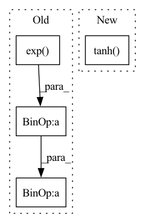

Pattern ID :13305
Before Change
import torch
def mytanh(x):
a = x.exp()
tanh = (a - 1/ a) / (a + 1/a)
tanh = (1 + tanh) / 2
return tanh
After Change
def mytanh(var_in):
customized tanh activation, output range: (0, 1)
var_tanh = torch.tanh( var_in)
var_out = (1 + var_tanh) / 2
return var_out
In pattern: SUPERPATTERN
Frequency: 4
Non-data size: 4
Instances Fragment ID: 45086959
Project Name: novartis/scar
Commit Name: d6e8b732665bd1eebb17cb162f84ec03be655765
Time: 2022-04-27
Author: 43896555+CaibinSh@users.noreply.github.com
File Name: scar/main/_activation_functions.py
M Class Name: AnonimousClass
N Class Name: AnonimousClass
M Method Name: mytanh(1)
N Method Name: mytanh(1)
M Parent Class:
N Parent Class:
M File Name: scar/main/_activation_functions.py
N File Name: scar/main/_activation_functions.py
M Start Line: 6
M End Line: 9
N Start Line: 10
N End Line: 12
Before Change
def __init__(self):
super().__init__()
def execute(self, x) :
return ((jt.exp (x) - jt.exp( -x) ) / (jt.exp(x) + jt.exp (-x)))
class Sigmoid(Module):
def __init__(self):After Change
def __init__(self):
super().__init__()
def execute(self, x) :
return x.tanh()
class Sigmoid(Module):
def __init__(self):
super().__init__() Fragment ID: 45086974
Project Name: jittor/jittor
Commit Name: 5b7e057f6c62cf2438c448cb2b465b9ef3db5f22
Time: 2020-04-16
Author: randonlang@gmail.com
File Name: python/jittor/nn.py
M Class Name: Tanh
N Class Name: Tanh
M Method Name: execute(2)
N Method Name: execute(2)
M Parent Class: Module
N Parent Class: Module
M File Name: python/jittor/nn.py
N File Name: python/jittor/nn.py
M Start Line: 370
M End Line: 370
N Start Line: 370
N End Line: 370
Before Change
def __init__(self):
super().__init__()
def execute(self, x) :
return ((jt.exp (x) - jt.exp( -x) ) / (jt.exp(x) + jt.exp (-x)))
class Sigmoid(Module):
def __init__(self):After Change
def __init__(self):
super().__init__()
def execute(self, x) :
return x.tanh()
class Sigmoid(Module):
def __init__(self):
super().__init__() Fragment ID: 45087021
Project Name: jittor/jittor
Commit Name: 7136b48a707fbe6b3ff04f7fec394167a27944a2
Time: 2020-07-23
Author: 51511617+Exusial@users.noreply.github.com
File Name: python/jittor/nn.py
M Class Name: Tanh
N Class Name: Tanh
M Method Name: execute(2)
N Method Name: execute(2)
M Parent Class: Module
N Parent Class: Module
M File Name: python/jittor/nn.py
N File Name: python/jittor/nn.py
M Start Line: 370
M End Line: 370
N Start Line: 553
N End Line: 553
Before Change
// run through model
s = self.s_net(mu if y is None else torch.cat([y, mu], dim=-1))
t = self.t_net(mu if y is None else torch.cat([y, mu], dim=-1))
x = mu + (1 - self.mask) * (u * s.exp() + t) // cf RealNVP eq 7
log_abs_det_jacobian = (1 - self.mask) * s // log det dx/du
After Change
s = self.s_net(mu if y is None else torch.cat([y, mu], dim=-1))
t = self.t_net(mu if y is None else torch.cat([y, mu], dim=-1)) * (1 - self.mask)
log_s = torch.tanh( s) * (1 - self.mask)
x = u * torch.exp(log_s) + t
//x = mu + (1 - self.mask) * (u * s.exp() + t) // cf RealNVP eq 7
Fragment ID: 45087019
Project Name: zalandoresearch/pytorch-ts
Commit Name: f09153cf5a694e4cf3a7a6471d842b7377557039
Time: 2020-01-21
Author: kashif.rasul@gmail.com
File Name: pts/modules/flows.py
M Class Name: LinearMaskedCoupling
N Class Name: LinearMaskedCoupling
M Method Name: inverse(3)
N Method Name: inverse(3)
M Parent Class: nn.Module
N Parent Class: nn.Module
M File Name: pts/modules/flows.py
N File Name: pts/modules/flows.py
M Start Line: 175
M End Line: 182
N Start Line: 182
N End Line: 190